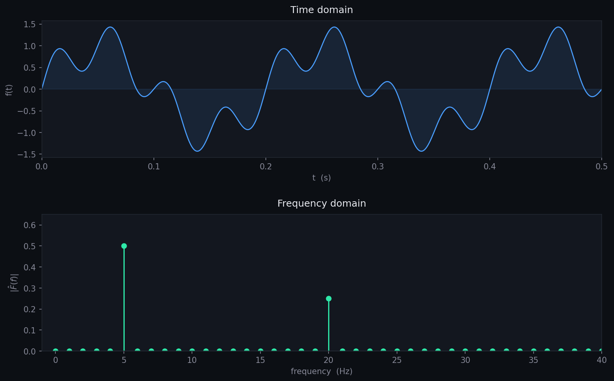
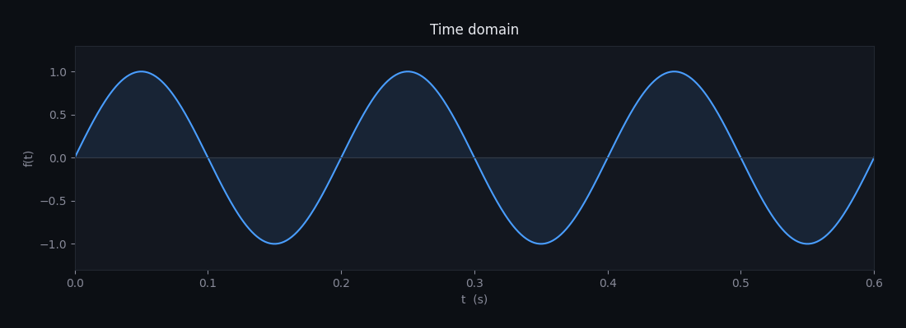
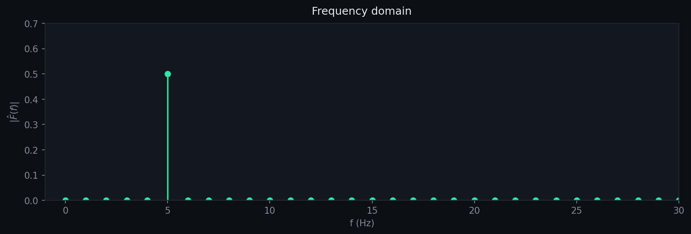

Fourier Transform
What is Fourier Transformation?
Imagine hearing a song. Your ears receive only one complicated vibration in time, yet your brain can distinguish bass, drum, flute, and voice separately. Fourier transformation does the same mathematically. It takes a signal written in time or space and rewrites it in terms of frequencies. Instead of asking what happens at time \(t\), it asks what frequencies exist inside it.
The continuous Fourier transform is written as
\[ F(\omega)=\int_{-\infty}^{\infty} f(t)e^{-i\omega t}dt \] \[ F(f)=\int_{-\infty}^{\infty} f(t)e^{-i \cdot2\pi f t}dt \]
And the inverse transform is
\[ f(t)=\frac{1}{2\pi}\int_{-\infty}^{\infty}F(\omega)e^{i\omega t}d\omega \]
The first equation moves from time domain to frequency domain. The second reconstructs the original signal exactly.
Example
Below, you will see a plot of the signal
\[ f(t)=\sin(2\pi \cdot 5 \cdot t)+0.5\sin(2\pi \cdot 20 \cdot t) \]
in time domain and frequency domain. At first glance, this waveform looks more complicated. The faster oscillation rides on top of the slower one.

But Fourier transformation separates the ingredients immediately. The spectrum contains:
\[ 5\text{ Hz component} \] \[ 20\text{ Hz component} \]
Mathematical Conversion: Pure Sine Wave
Consider the signal
\[ f(t) = \sin(10\pi \cdot t) \] \[ f(t) = \sin(2\pi \cdot 5 \cdot t) \]
This is a clean oscillation with frequency 5 Hz. In time domain, the signal rises and falls smoothly forever.

To transform the pure sine signal into frequency space, we first rewrite the sine function using Euler's identities.
\[ e^{i\theta} = \cos\theta + i\sin\theta \]
\[ e^{-i\theta} = \cos\theta - i\sin\theta \]
Subtracting the second equation from the first:
\[ e^{i\theta} - e^{-i\theta} = (\cos\theta + i\sin\theta)-(\cos\theta - i\sin\theta) \]
\[ e^{i\theta} - e^{-i\theta} = 2i\sin\theta \]
Therefore,
\[ \sin\theta=\frac{1}{2i}\left(e^{i\theta}-e^{-i\theta}\right) \]
Now for our signal,
\[ f(t) = \sin(10\pi \cdot t) \]
So, \[ \theta = 10\pi t \] \[ \sin(10\pi t)=\frac{1}{2i}\left(e^{i10\pi t}-e^{-i10\pi t}\right) \]
Substituting this into the Fourier transform integral:
\[ \hat{F}(f)=\int_{-\infty}^{\infty}\sin(10\pi t)\,e^{-i2\pi ft}\,dt \]
\[ \hat{F}(f)= \int_{-\infty}^{\infty} \frac{ e^{i2\pi \cdot 5t} - e^{-i2\pi \cdot 5t} }{2i} \,e^{-i2\pi ft}\,dt \]
split the expression:
\[ \hat{F}(f) = \frac{1}{2i} \int_{-\infty}^{\infty} e^{i2\pi(5-f)t}\,dt - \frac{1}{2i} \int_{-\infty}^{\infty} e^{-i2\pi(5+f)t}\,dt \]
using the delta identity:
\[ \int_{-\infty}^{\infty} e^{i2\pi \alpha t}\,dt = \delta(\alpha) \]
Therefore,
\[ \boxed{ \hat{F}(f)= \frac{1}{2i} \left[ \delta(f-5)-\delta(f+5) \right] } \]
This form reveals that the sine wave is composed of two frequencies, which generate peaks at \(f=\pm 5\) Hz in frequency space. The negative side is always a perfect mirror — so we lose zero information by keeping only the positive frequency.

Use case
If we look at the night sky through a telescope. The light reaching us seems continuous, but Fourier methods can separate hidden frequencies and reveal chemical fingerprints of distant stars.
A raw ECG signal is just voltage versus time. Frequency analysis can reveal rhythm irregularities, stress signatures, or hidden periodicity before the eye notices anything.
All essential Python codes are available at GitHub